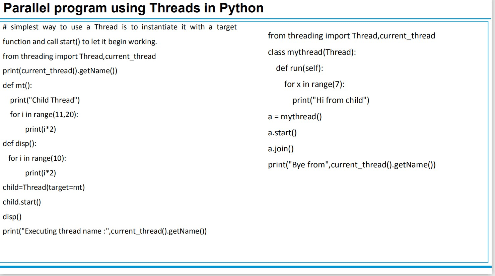
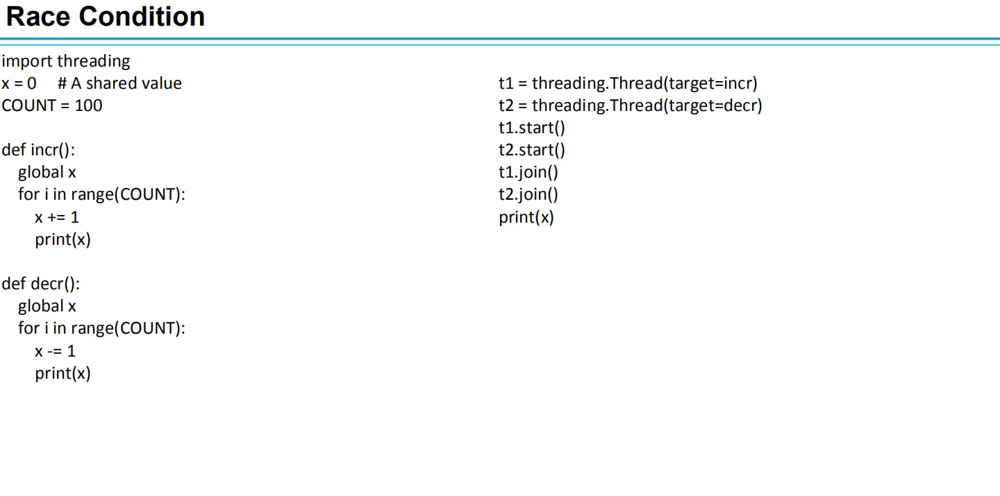
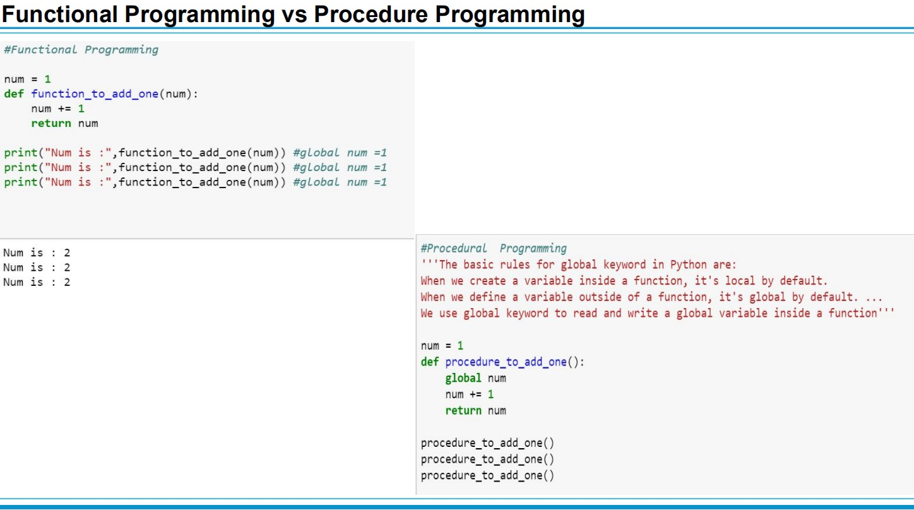
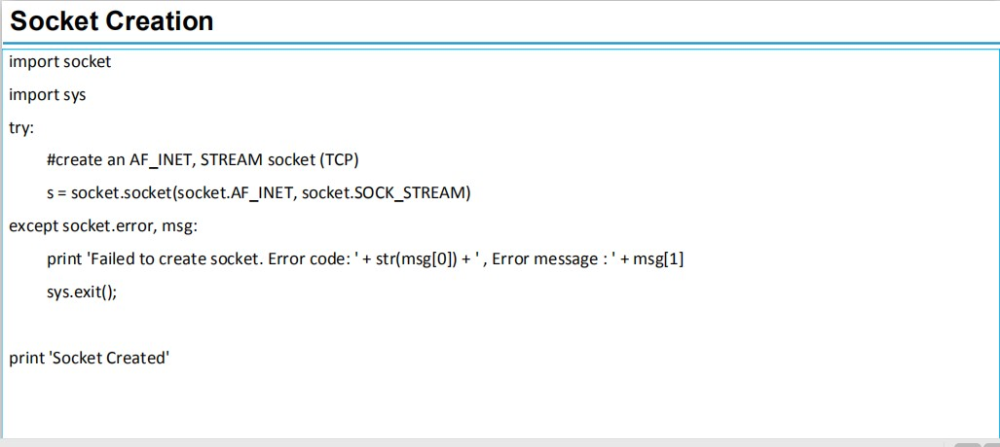
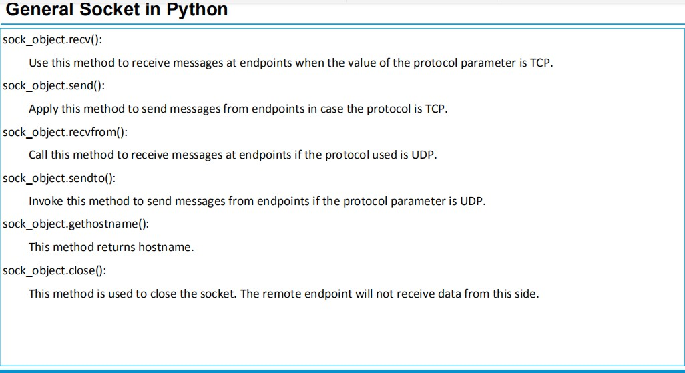
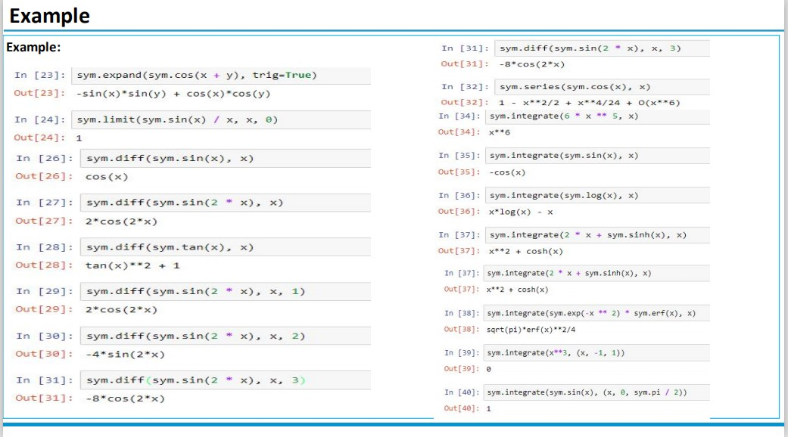
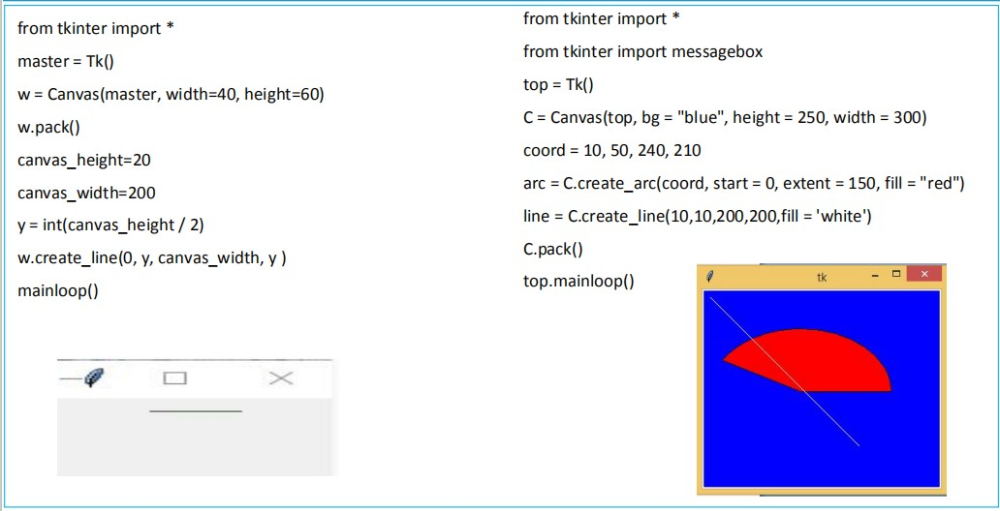

Python is an interpreted, high-level, general-purpose programming language. Created by Guido van Rossum and first released in 1991,
Python is the most commonly used language and lot of domain applications such as Data Science and Artificial Inteligence have become easy with Python.Although this language is slow compared to C++ and C it offers a lot of packages and easy is to use. All the more the developer community of python is very active and hence more developments are made using Python.Python also supports many Programming Paradigms and we will discuss them below.
Structured programming is a program written with only the three constructions sequence, decision (if..elif statements), and repetition (while or for statements). Important: the body of a Python if, elif, while, or for statement is indicated by indenting four spaces. Python does not use end statements.
Sequence.
Lines or blocks of code are written and executed in sequential order.
Example:
x = 56
y = 11
z = x + y
print(z)
Decision.
Execute a block of code (action) if a condition is true. The block of code is executed at most once.
if condition:
action
Example:
if x % 2 == 0:
print("The number is even.")
Repetition/Iteration.
Repeat a block of code (action) while a condition is true. There is no limit to the number of times that the block can be executed.
while condition:
action
Example:
n = 1
while n < 100:
print(n)
n = n * n
Procedural Paradigm
Tasks are treated as step-by-step iterations where common tasks are placed in functions that are called as needed.This coding style favors iteration, sequencing, selection, and modularization.Python excels in implementing this particular paradigm.
The procedural style relies on procedure calls to create modularized code. This approach simplifies your application code by breaking it into small pieces that a developer can view easily. Even though procedural coding is an older form of application development, it’s still a viable approach for tasks that lend themselves to step-by-step execution. Here’s an example of the procedural coding style using my_list:
Object Oriented Paradigm
Object-oriented Programming, or OOP for short, is a programming paradigm which provides a means of structuring programs so that properties and behaviors are bundled into individual objects.
For instance, an object could represent a person with a name property, age, address, etc., with behaviors like walking, talking, breathing, and running. Or an email with properties like recipient list, subject, body, etc., and behaviors like adding attachments and sending.
class Dog(object):
pass
Object
Class
Method
Inheritance
Polymorphism
Data Abstraction
Encapsulation
All classes create objects, and all objects contain characteristics called attributes (referred to as properties in the opening paragraph). Use the __init__() method to initialize (e.g., specify) an object’s initial attributes by giving them their default value (or state). This method must have at least one argument as well as the self variable, which refers to the object itself (e.g., Dog).
class Dog:
# Initializer / Instance Attributes
def __init__(self, name, age):
self.name = name
self.age = age
Event Driven Paradigm
Event-driven programming focuses on events. Eventually, the flow of program depends upon events. Until now, we were dealing with either sequential or parallel execution model but the model having the concept of event-driven programming is called asynchronous model. Event-driven programming depends upon an event loop that is always listening for the new incoming events. The working of event-driven programming is dependent upon events. Once an event loops, then events decide what to execute and in what order
. Tkinter is the standard GUI library for Python.
Creating a GUI application using Tkinter
Steps
Import the Tkinter module.
Import tKinter as tk
Create the GUI application main window.
root = tk.Tk()
Add one or more of the above-mentioned widgets to the GUI application.
button = tk.Button(root, text='Stop', width=25, command=root.destroy)
button.pack()
Enter the main event loop to take action against each event triggered by the user.
root.mainloop()
Declarative Paradigm
Declarative
programming
is
a
programming paradigm that expresses the
logic of
a computation without
describing its
control flow.
This
paradigm
often
considers
programs
as
theories of
a formal
logic,
and computations
as deductions
in
that logic space.
Declarative
programming
is
often
defined
as any style of programming
that
is not
imperative.
Common declarative
languages
include
those of database query
languages (SQL), logic
programming,
functional programming, etc.
Imperative Paradigm
The imperative programming paradigm uses the imperative mood of natural language to express directions. It executes commands in a step-by-step manner, just like a series of verbal commands. Following the "how-to-solve" approach, it makes direct changes to the state of the program; hence it is also called the stateful programming model. Using the imperative programming paradigm, you can quickly write very simple yet elegant code, and it is super-handy for tasks that involve data manipulation. Owing to its comparatively slower and sequential execution strategy, it cannot be used for complex or parallel computations.
Parallel Paradigm
A system is said to be parallel if it can support two or more actions executing simultaneously i.e., multiple actions are
simultaneously executed in parallel systems.
The evolution of parallel processing, even if slow, gave rise to a considerable variety of programming paradigms.
Parallelism Types:
Explicit Parallelism
Implicit Parallelism
Explicit Parallelism
Explicit Parallelism is characterized by the presence of explicit constructs in the programming language, aimed at describing (to
a certain degree of detail) the way in which the parallel computation will take place.
A wide range of solutions exists within this framework. One extreme is represented by the ``ancient'' use of basic, low level
mechanisms to deal with parallelism--like fork/join primitives, semaphores, etc--eventually added to existing programming
languages. Although this allows the highest degree of flexibility (any form of parallel control can be implemented in terms of
the basic low level primitives gif), it leaves the additional layer of complexity completely on the shoulders of the programmer,
making his task extremely complicate.
Implicit Parallelism
Allows programmers to write their programs without any concern about the exploitation of parallelism. Exploitation of
parallelism is instead automatically performed by the compiler and/or the runtime system. In this way the parallelism is
transparent to the programmer maintaining the complexity of software development at the same level of standard sequential
programming.
• Extracting parallelism implicitly is not an easy task. For imperative programming languages, the complexity of the problem is
almost prohibitively and allows positive results only for restricted sets of applications (e.g., applications which perform
intensive operations on arrays.
• Declarative Programming languages, and in particular Functional and Logic languages, are characterized by a very high level of
abstraction, allowing the programmer to focus on what the problem is and leaving implicit many details of how the problem
should be solved.
• Declarative languages have opened new doors to automatic exploitation of parallelism. Their focusing on a high level
description of the problem and their mathematical nature turned into positive properties for implicit exploitation of
parallelism.
Methods for parallelism
There are many methods of programming parallel computers. Two of the most common are message passing and data parallel.
1. Message Passing - the user makes calls to libraries to explicitly share information between processors.
2. Data Parallel - data partitioning determines parallelism
3. Shared Memory - multiple processes sharing common memory space
4. Remote Memory Operation - set of processes in which a process can access the memory of another process without its
participation
5. Threads - a single process having multiple (concurrent) execution paths
6. Combined Models - composed of two or more of the above.

Concurrent Programming Paradigm
Computing systems model the world, and the world contains actors that execute independently of, but communicate with,
each other. In modelling the world, many (possibly) parallel executions have to be composed and coordinated, and that's
where the study of concurrency comes in.
• There are two common models for concurrent programming: shared memory and message passing.
• Shared memory. In the shared memory model of concurrency, concurrent modules interact by reading and writing
shared objects in memory.
• Message passing. In the message-passing model, concurrent modules interact by sending messages to each other
through a communication channel. Modules send off messages, and incoming messages to each module are queued up
for handling.
Issues Concurrent Programming Paradigm
Concurrent programming is programming with multiple tasks. The major issues of concurrent programming are:
• Sharing computational resources between the tasks;
• Interaction of the tasks.
Objects shared by multiple tasks have to be safe for concurrent access. Such objects are called protected. Tasks accessing such an
object interact with each other indirectly through the object.
An access to the protected object can be:
• Lock-free, when the task accessing the object is not blocked for a considerable time;
• Blocking, otherwise.
Blocking objects can be used for task synchronization. To the examples of such objects belong:
• Events;
• Mutexes and semaphores;
• Waitable timers;
• Queues

Functional Paradigm
Functional programming is a programming paradigm in which we try to bind everything in pure mathematical functions style. It is a declarative type of programming style. Its main focus is on “what to solve” in contrast to an imperative style where the main focus is “how to solve”. It uses expressions instead of statements. An expression is evaluated to produce a value whereas a statement is executed to assign variables.
Functional Languages
Functional languages are created based on the functional paradigm. Such languages permit functional solutions to problems by permitting a programmer to treat functions as first-class objects(they can be treated as data, assumed to have the value of what they return; therefore, they can be passed to other functions as arguments or returned from functions).
Often functional programs are:
Easier to read.
Easier to debug and maintain.
Easier to parallelize.
Useful features:
Hindley–Milner type system.
Lazy evaluation.
Closures.
All computations are implemented through functions: functions are first-class citizens.
Main building blocks:
Immutability: no variables gets changed (no side effects). In some sense, there are no variables.
Recursions.
Curried functions.
Higher-order functions: compositions ('operators in functional analysis).
Advantages:
The following are desirable properties of a functional language:
The high level of abstraction, especially when functions are used, supresses many of the details of programming and thus removes the possibility of commiting many classes of errors;
The lack of dependence on assignment operations, allowing programs to be evaluated in many different orders. This evaluation order independence makes function-oriented languages good candidates for programming massively parallel computers;
The absence of assignment operations makes the function-oriented programs much more amenable to mathematical proof and analysis than are imperative programs, because functional programs possess referential transparency.
Disadvantages:
Perhaps less efficiencey
Problems involving many variables or a lot of sequential activity are sometimes easier to handle imperatively or with object-oriented programming.

Logic Paradigm
It can be an abstract model of computation.
• Solve logical problems like puzzles, series
• Have knowledge base which we know before and along with the question you specify knowledge and how that knowledge is to be applied
through a series of rules
• The Logical Paradigm takes a declarative approach to problem-solving.
• Various logical assertions about a situation are made, establishing all known facts.
• Then queries are made.
Logic programming is a paradigm where computation arises from proof search in a logic according to a fixed, predictable strategy. A logic is a
language. It has syntax and semantics. It. More than a language, it has inference rules.
Dependent Paradigm
A constant problem:
• Writing a correct computer program is hard and proving that a program is correct is even harder
• Dependent Types allow us to write programs and know they are correct before running them.
• dependent types: you can specify types that can check the value of your variables at compile time
Example:
Here is how you can declare a Vector that contains the values 1, 2, 3 :
val l1 = 1 :#: 2 :#: 3 :#: Vnil
This creates a variable l1 who’s type signature specifies not only that it’s a Vector that contains Ints, but also that it is a Vector of
length 3. The compiler can use this information to catch errors. Let’s use the vAdd method in Vector to perform a pairwise addition
between two Vectors:
val l1 = 1 :#: 2 :#: 3 :#: VNil
val l2 = 1 :#: 2 :#: 3 :#: VNil
val l3 = l1 vAdd l2
// Result: l3 = 2 :#: 4 :#: 6 :#: VNil
Networking Paradigm
The Network paradigm involves thinking of computing in terms of a client, who is essentially in need of some type of information,
and a server, who has lots of information and is just waiting to hand it out. Typically, a client will connect to a server and query for
certain information. The server will go off and find the information and then return it to the client.
In the context of the Internet, clients are typically run on desktop or laptop computers attached to the Internet looking for
information, whereas servers are typically run on larger computers with certain types of information available for the clients to
retrieve. The Web itself is made up of a bunch of computers that act as Web servers; they have vast amounts of HTML pages and
related data available for people to retrieve and browse. Web clients are used by those of us who connect to the Web servers and
browse through the Web pages.
Network programming uses a particular type of network communication known as sockets. A socket is a software abstraction for an
input or output medium of communication.
What is Socket?
A socket is a software abstraction for an input or output medium of communication.
• Sockets allow communication between processes that lie on the same machine, or on different machines working in diverse
environment and even across different continents.
• A socket is the most vital and fundamental entity. Sockets are the end-point of a two-way communication link.
• An endpoint is a combination of IP address and the port number.
For Client-Server communication,
▪ Sockets are to be configured at the two ends to initiate a connection,
▪ Listen for incoming messages
▪ Send the responses at both ends
▪ Establishing a bidirectional communication.


Symbolic Program Paradigm
Symbolic computation deals with the computation of mathematical objects symbolically. This means that the mathematical objects
are represented exactly, not approximately, and mathematical expressions with unevaluated variables are left in symbolic form.
It Covers the following:
• As A calculator and symbols
• Algebraic Manipulations - Expand and Simplify
• Calculus – Limits, Differentiation, Series , Integration
• Equation Solving – Matrices

Automata Based Paradigm
Automata-based programming is a programming paradigm in which the program or its part is thought of as a model of a finite state
machine or any other formal automation.
What is Automata Theory?
• Automata theory is the study of abstract computational devices
• Abstract devices are (simplified) models of real computations
• Computations happen everywhere: On your laptop, on your cell phone, in nature, …
The language of a DFA (Q, Σ, δ, q0
, F) is the set of all strings over Σ that, starting from
q0
and following the transitions as the string is read left to right, will reach some
accepting state.
GUI
In the 1980's, individuals started using computers. Typical applications included spreadsheets, word processors and computer aided design (CAD). Many of the people using these applications had no technical background. One consequence of this was that user interface design became important. It was no longer sufficient that a program work; in addition, it had to make its functionality accessible to users who did not have specialized training.
Many different user interfaces have been tried. One of the most successful is the graphical user interface (GUI). This is the kind of interface provided by the Macintosh, Motif, Tk, and Microsoft Windows. It includes a mouse and a graphical display, with windows, menus, dialog boxes, scroll bars and so on.
Some important points:
A major task that a GUI designer needs to do is to determine what will happen when a GUI is invoked
Every GUI component may generate different kinds of “events” when a user makes access to it using his mouse or keyboard
E.g. if a user moves his mouse on top of a button, an event of that button will be generated to the Windows system
E.g. if the user further clicks, then another event of that button will be generated (actually it is the click event)
For any event generated, the system will first check if there is an event handler, which defines the action for that event
GUI Using Python
Tkinter: Tkinter is the Python interface to the Tk GUI toolkit shipped with Python.
wxPython: This is an open-source Python interface for wxWindows
PyQt −This is also a Python interface for a popular cross-platform Qt GUI library.
JPython: JPython is a Python port for Java which gives Python scripts seamless access to Java class libraries on the local machine
Tkinter Programming
Tkinter is the standard GUI library for Python.
Creating a GUI application using Tkinter
